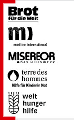
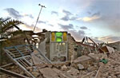
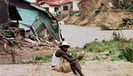
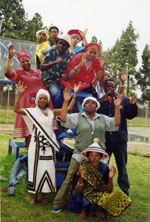
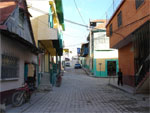
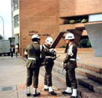

|
Bündnis »Gemeinsam für Menschen in Not« hilft in Erdbebengebiet
|
Die Organisationen des Hilfsbündnisses »Gemeinsam für Menschen in Not - Entwicklung hilft« haben ihre Arbeit in den Erdbebengebieten von Pakistan aufgenommen.
terre des hommes Deutschland, das in der betroffenen Region keine Projektpartner hat, unterstützt als Mitglied des Bündnisses »Gemeinsam für Menschen in Not« den Aufruf.
www.entwicklung-hilft.de |
Hilfswerke rufen gemeinsam zu Spenden für Erdbebenopfer auf
|
Das Hilfswerkebündnis »Gemeinsam für Menschen in Not - Entwicklung hilft!« hat heute zu Spenden für die Erdbebenopfer in Pakistan und Indien aufgerufen. »Die Folgen des Bebens sind weit dramatischer als anfangs angenommen. Es ist unbeschreiblich: Tod und Zerstörung wo man hinschaut«, sagte ein Mitarbeiter einer Partnerorganisation vor Ort. Die Bündnis-Organisationen haben 150.000 Euro für die Soforthilfe bereitgestellt und eigene Mitarbeiter, die in der Region im Rahmen von Entwicklungsprojekten tätig sind, in die Katastrophenregion entsandt. Mitarbeiter von einheimischen Partnerorganisationen sind ebenfalls auf dem Weg in die betroffenen Gebiete oder bereits vor Ort. Dem Bündnis gehören Brot für die Welt, die Deutsche Welthungerhilfe, medico international, Misereor und terre des hommes an.
Spendenkonto 51 51
Bank für Sozialwirtschaft
BLZ 370 205 00
Stichwort »Erdbeben Asien«
Weitere Informationen zum Bündnis »Gemeinsam für Menschen in Not - Entwicklung hilft« |
Die Ärmsten der Armen hat es am härtesten getroffen
|
Von der Hurrikan-Katastrophe in Mittelamerika sind vor allem Bauern- und Fischerfamilien betroffen, die zu den armen Bevölkerungsgruppen gehören. Darauf hat heute das Hilfswerke-Bündnis »Gemeinsam für Menschen in Not – Entwicklung hilft« hingewiesen. Dem Bündnis gehören Brot für die Welt, medico international, Misereor, terre des hommes und Welthungerhilfe an.
»Bevölkerungsdruck und ungerechte Landbesitzverhältnisse zwingen die Armen dazu, sich in risikoreichen Regionen, etwa an Steilhängen oder in bereits stark erodierten Gebieten anzusiedeln,« sagte Wolf-Christian Ramm, der Sprecher des Bündnisses. »Dort sind jetzt auch die größten Schäden aufgetreten. Tagelange Regenfälle und Erdrutsche haben die einfachen Häuser sowie Vorräte und Felder vernichtet.«
Die Auswirkungen der Katastrophe sind nach Angaben der Hilfswerke gravierender als anfänglich befürchtet. Vor allem in El Salvador spitzt sich die Lage zu, da dort auch der Vulkan Santa Ana ausgebrochen ist. Etwa 40.000 Menschen, deren Häuser zerstört wurden oder die in gefährdeten Gebieten leben, mussten evakuiert werden. Sie wurden in Notunterkünften untergebracht oder sind in die Hauptstadt San Salvador geflohen. Sowohl aus El Salvador als auch aus Guatemala werden Hunderte von Todesopfern gemeldet.
Das Bündnis-Organisationen haben gemeinsam zu Spenden für die betroffene Bevölkerung in den Katastrophengebieten aufgerufen. Sie arbeiten dort mit lokalen Partnerorganisationen zusammen, die einen direkten Zugang zur Bevölkerung haben.
»Jetzt ist schnelle Hilfe geboten,« sagte Bündnis-Sprecher Wolf-Christian Ramm. Sofort benötigt werden Nahrungsmittel, Medikamente, Hygieneartikel, Kleidung und sauberes Trinkwasser. Bei den Wiederaufbaumaßnahmen wollen die Bündnis-Organisationen Hilfe dazu beitragen, dass der Bodenerosion durch Wiederaufforstung und anderen Maßnahmen entgegengewirkt wird.
Spendenkonten:
| Stichwort "Hurrikan" |
| Sparkasse Gaggenau-Kuppenheim |
| BLZ 665 512 90 |
| Nr. 120 790 |
| Stichwort "Hurrikan" |
| Volksbank Osnabrück eG |
| BLZ 265 900 25 |
| Spendenkonto 700 800 700 |
|
Linktipp "Wer wird Revolutionär?"
|
In Anlehnung an das TV-Wissensquiz »Wer wird Millionär« mit Günter Jauch hat eine Hochschulgruppe der Uni Köln ein ebenso amüsantes wie lehrreiches Gegenspiel entwickelt: »Wer wird Revolutionär?« behandelt das linkspolitische Spektrum von Che Guevara bis zur Anti-Atomkraft- Bewegung.
www.wer-wird-revolutionaer.de |
Schutz und Förderung von kultureller Vielfalt
|
Die Verwirklichung sozialer Gerechtigkeit, konkrete Verbesserung der Lebensbedingungen der Menschen, strukturelle Veränderungen zu Gunsten von Benachteiligten und Achtung vor der Vielfalt gesellschaftlicher Lebensweisen und Kulturen sind Ziele der Projektarbeit von terre des hommes. Durch terre des hommes geförderte Projekte unterstützen die Solidarität zwischen den verschiedenen Kulturen und Gemeinschaften. Sie stärken die Eigenpotenziale diskriminierter Bevölkerungsgruppen, unterstützen ihre Selbstorganisation und befähigen sie, ihre Rechte einzufordern und zu vertreten. Denn terre des hommes will eine Zukunft für alle Kinder schaffen – für heute lebende wie für zukünftige Generationen.
Beispiele:
- Vietnam: Eigene Kultur und Identität erhalten
- Peru: Anbaumethoden der indianischen Vorfahren wieder entdecken
- Südafrika: Theater spielen gegen sexuelle Gewalt
Weitere Informationen
|
tdh bittet um Spenden für die Hurrikan-Opfer in Guatemala und El Salvador
|
Über 40.000 Menschen fliehen vor Überschwemmungen und Erdrutschen
Das Kinderhilfswerk terre des hommes ruft zu Spenden für die Katastrophenopfer in Guatemala und El Salvador auf. »Benötigt werden insbesondere Lebensmittel, Medikamente und Notunterkünfte«, erklärte Ellen Krumstroh, Leiterin des terre des hommes-Büros Mittelamerika. »Die Lage spitzt sich immer weiter zu. Vor allem in Guatemala ist die Situation sehr kritisch. Es gibt zahlreiche Erdrutsche, und viele Dörfer und Gemeinden sind von der Außenwelt abgeschnitten. Auch die Stromversorgung ist teilweise zusammengebrochen«, so Ellen Krumstroh.
In El Salvador ist die Situation besonders prekär, weil auch der hauptstadtnahe Vulkan Santa Ana ausgebrochen ist. Allein dort sind über 40.000 Menschen, deren Häuser zerstört wurden oder die in gefährdeten Gebieten leben, evakuiert worden. Viele Menschen sind in die Hauptstadt San Salvador geflohen. »Die Notunterkünfte sind hoffnungslos überbelegt«, beschreibt Ellen Krumstroh die Situation. »Wir müssen uns kurzfristig darum kümmern, weitere Notlager bereitzustellen, denn auf Grund der anhaltenden Regenfälle ist in den nächsten Tagen keine Entspannung der Situation zu erwarten.«
Mittelfristig ist geplant, den geflohenen Familien dabei zu helfen, wieder in ihre Gemeinden zurückzukehren und sich eine neue Existenz aufzubauen. Ellen Krumstroh: »Ein großes Problem, das auf uns zukommt, ist, dass die Ernte in El Salvador und Guatemala durch die Regenfälle zum großen Teil vernichtet worden ist. Doch im Augenblick bitten wir ganz dringend um Spenden, um den Menschen in ihrer größten Not zu helfen.«
Spendenkonten:
| Stichwort "Hurrikan" |
| Sparkasse Gaggenau-Kuppenheim |
| BLZ 665 512 90 |
| Nr. 120 790 |
| Stichwort "Hurrikan" |
| Volksbank Osnabrück eG |
| BLZ 265 900 25 |
| Spendenkonto 700 800 700 |
|
Keine Förderung paramilitärischer Gewalttäter in Kolumbien mit Hilfsgeldern der Europäischen Union
|
Die Pläne der kolumbianischen Regierung zur Reintegration paramilitärischer Gewalttäter in die Gesellschaft bedeuten eine nachträgliche Belohnung von Raub und Menschenrechtsverletzungen. Sie dürfen daher keinesfalls mit Entwicklungshilfe-Mitteln der Europäischen Union gefördert werden. Dies erklärte das entwicklungspolitische Kinderhilfswerk terre des hommes angesichts der fatalen Menschenrechtslage in Kolumbien.
»Immer wieder informieren uns unsere Projektpartner in Kolumbien über Morde an Jugendlichen, über Gewalttaten gegen Vertreter von Dorfgemeinschaften und über die Verfolgung von Menschenrechtsanwälten«, erklärte Wolf-Christian Ramm, Pressesprecher von terre des hommes. »Die kolumbianische Regierung bedient sich paramilitärischer Gruppen und bewaffneter Verbände der Großgrundbesitzer, die mit amtlicher Billigung Friedensgemeinden und Dörfer terrorisieren.« Einem Erlass der Regierung zufolge sollen nun ehemalige Mitglieder der paramilitärischen Gruppen, die offiziell der Gewalt abgeschworen haben, mit staatlicher Förderung eine Existenzgrundlage bekommen. Die Europäische Union erwägt, das Programm mit Mitteln aus dem Entwicklungshilfe-Fonds zu unterstützen. terre des hommes appelliert an die Europäische Union, diese Unterstützung zum jetzigen Zeitpunkt keinesfalls zu gewähren. »Die Pläne der kolumbianischen Regierung sehen höchstens symbolische Strafen wie Hausarrest, keine wirkliche Kontrolle der Waffenabgabe und keine Wiedergutmachung für die Opfer vor«, so Wolf-Christian Ramm. »Die Ansiedlung ehemaliger Paramilitärs auf zuvor von ihnen geraubtem Land bedeutet eine nachträgliche Legalisierung des Raubzuges, der keinesfalls mit Steuergeldern europäischer Bürger gefördert werden darf.« Kolumbianische Partnerorganisationen von terre des hommes fordern ihre Regierung auf, Gewalttäter zu bestrafen und geraubtes Land an die Dorfgemeinschaften zurückzugeben. terre des hommes appelliert an die Bundesregierung, die systematische Verletzung von Menschenrechten in Kolumbien klar zu verurteilen und im Rahmen der Europäischen Union eine Initiative gegen die Straflosigkeit von Verbrechen in Kolumbien zu starten. Eine wichtige Rolle hierbei spiele das Kolumbienbüro des Hochkommissars der Vereinten Nationen für die Menschenrechte, das unbedingt personell und finanziell gestärkt werden müsse. |
|
|
|
 Ansprechpartner Ansprechpartner
|
|
Wolfgang Deppisch
(Projektinfos)
Tel. 07222 / 32927
Heinz Wolf
(Sponsoring, Allgemeines)
Tel. 07225 / 75543
weitere Ansprechpartner
|
|
Erlöse
1992-2012
|
|

Jahr |
Euro |
1992 |
70.000 |
1993 |
75.600 |
1994 |
83.883 |
1995 |
69.617 |
1996 |
51.412 |
1997 |
61.749 |
1998 |
60.333 |
1999 |
68.742 |
2000 |
85.492 |
2001 |
106.375 |
2002 |
78.937 |
2003 |
84.027 |
2004 |
76.662 |
2005 |
149.941 |
2006 |
84.497 |
2007 |
105.958 |
2008 |
104.053 |
2009 |
100.833 |
2010 |
107.254 |
2011 |
103.600 |
| 2012 |
158.250 |
| 2013 |
163.420 |
1977-2013 |
mehr als 2,7 Mio. € |
|
Detailansicht der Erlöszahlen |
|
|


;)